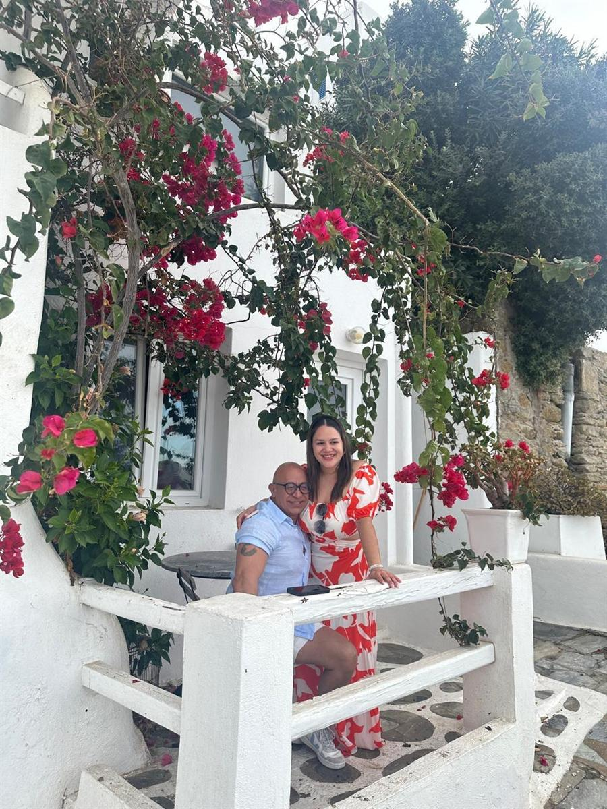

Con todo nuestro amor, les anunciamos
13 · Marzo · 2027
Cuernavaca, Morelos

Está a punto de comenzar.
Días
Horas
Minutos
Segundos
Todo en Quinta Santa María
Cam. al Monasterio 9 · Cuernavaca, Morelos
📍 Ver en mapa
Quédate cerca y disfruta el fin de semana completo. Te recomendamos buscar un Airbnb por Santa María Ahuacatitlán, a unos minutos de la sede.
Reserva con tiempo · la zona se llena
Por favor evita el blanco total para que juntos creemos un ambiente lleno de color, elegancia y amor.
Para nosotros este es un día muy especial y compartiéndolo contigo, creando momentos inolvidables juntos.
Confirma tu asistencia antes del 1 de febrero de 2027